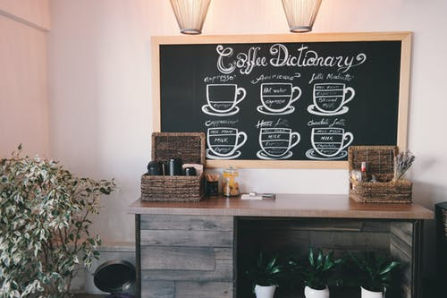

Miscellaneous
This page is kind of like a little bonus page. After you learned about the different types of coffee drinks maybe you want to make something yourself, or your curious where the good coffee shops are in Helena. This page includes a few different recipes to try out if you are feeling ambitious. The recipes are all different coffee drinks you can make at home. Links to the recipes are on the side bar. This page also includes where a few of people's favorite coffee shops are around town. Most of these coffee shops are great study spots as well.